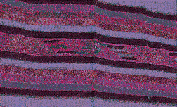

A STRAW HAT I PICKED UP IN TIJUANA as a novelty has become the single most important accessory of the trip. "That will come in handy," Ali said when he saw me handing over a handful of change at the tourist trap, "Have a great time in Mexico" stitched over the brim the side. I thought he was being funny. It was just a souvenir for Anaheim Sam, or maybe Murdock. Handy--what an understatement! It's the one thing that's keeping me from FRYING ALIVE.
This mountains are high enough there must be half the atmosphere as back at sea. No wonder the ancients believed they could climb to the sun: it burns twice as hot up here . . . so we must be half way there. Thank the PCH I'm not afraid of heights; it's been steep enough all the way up so now the narrow passes and stretches of overhanging trail overlook impressive drops. The cactus beds and jagged rocks at bottom make for pretty flimsy nets. Then there's the shortness of breath, more in the body than the lungs. Each step since the foothills has required reservoirs drawn upon from I'LL BE DAMNED if I know where. Ali, ever patient, never chastening, pauses a hundred-or-so feet in front of me. I look up from the ground every now and then and he stands there like a carrot, stolid with his walking stick, not even winded. It's like he levitates.
It's not even that I feel that hot. There's zero humidity and if I'm sweating I guess the high altitude evaporates it up before I can feel uncomfortable. There's something else when the sun pounds down this hard: a sense that I can't make any sudden movements or it will strike me good. There really is something to Ali's attitude about walking, but not so much the compulsive caution mumbo-jumbo; more like an imperative: you CAN'T AFFORD not to be careful or the next step may be your LAAAAAAAAAAAAAAAAAAST! Get the picture? A fever, but on the outside
When we get to the high plains desert I start in again. The setting's great but I can't be sure about the set, I mean it's a WHOLE NEW TRIP.
"Sunshine, have I ordered you to do anything in the short time I have known you?"
"No."
"I'm going to tell you now: quit subjecting yourself to all this onus of agency. You did not stumble into this desert; you were called. And you will not 'take' peyote; you will be taken by jikuli, if you are determined worthy."
"How will I know if I'm worthy?"
"Again, you won't. He will: by selecting you. Your eyes must be available, but if a jikuli happens to grope your scope, it is because you have been selected."
"Grope my scope?"
"If you should 'find' a cactus at all, it is really that you have been found."
Ali tells me to let my eyes be available, and while I look he gathers wood enough for a nightful of fire.
I am immediately drawn to the low point in our patch of desert, a little trough that in rainy season may become an arroyo, live with water snakes and brine shrimp. There are tall cacti, thorny trees, and some scattered governess bushes. This is where I begin my search, working over the minute convolutions of topography like water might, finding the stream of least resistance.
I'm looking for hours, it seems. Head shrunken in the sun, a shrinking of vision to the spot of land between my feet, the recomprising of the earth into earth. Ali taught me how to walk with caution and be sure not to disturb the earth's creatures, the flowers of her coat. But this is altogether a narrower focus: now I find myself squatting painfully and sweeping my way over irregular grids of desert, squinting at the miniscule distance from one knee to the other. Ant colonies and beetle tracks become my fruit stands and cities, as the road to travel compresses to this minimal tract of immediately visible land. There is a little universe of activity that all takes place at this level of immediacy with earth, Ali reminds me. Do not in your excitement grab at a jikuli hiding beneath a bush without looking closer: he may have a scorpion as his mate.
In the interstice between when I am looking bootlessly, brashly and unabashedly engaged in the hopeless act of an unworthy upstart, to the second I see myself from the perspective of my first cactus, it's as if a massive swoop of camera takes place: I'm a wild angel on a desert plain, and the earth spins off kilter for an instant while I genuinely see myself from below, from the cycloptic, blind eye of the cactus. It is more like feeling than seeing, some sonar . . . but definitely from before and below, at a creature looming above, timid and irresolute, but chosen.
"Ali! Ali! I see . . . it sees me. . . ." I feel dizzy and delusional, unable to focus. What if it's not a peyote or if I just saw a mirage--will this make me unfit? I'm afraid to look because I might have been wrong so I squeeze my eyes, seeing the blue flashing thumbprints of the sun, and thump my ass down on the hard earth. A stray spine of the governess gently gooses me, reminding me to look before I sit.
Ali finishes delivering an armful of dead vines and branches to the campsite and approaches cautiously so as not to tread on any plants. He crouches beside me and spreads the branches of the governess, and THERE IT IS, I wasn't dreaming, the little peyote cap peeking over its blanket of dirt, bold beholder of my image, a bit like a bite-size donut.
"A baby. Blessed, but not yet chosen."
I'm speechless. I don't believe Ali. That cactus is like a baby to me.
"He is too small to have selected you. It is like a strange child in the market reaching to you and saying "Mama!" Do not tease this little jikuli. Like the fisherman says: throw it back 'til it's bigger."
"But how big?"
"About the size of a fist." I hold up mine and examine it ruefully, a little bruised that the first sacred plant that called out to me is a little smaller. Ali says, "Like this." He makes a fist. His fist is big. "In the past few minutes, I have been seen by several like this. So have you, no doubt. But you haven't noticed." The head of my cactus has only six sections. Ali says it should have ten or twelve, at least, and turns again to gathering wood.
After letting myself look longingly a long moment at the baby who first found me, I recommence the painstaking process of searching the earth. "Remember," Ali calls to me, "let yourself be found." LET MYSELF nothing. . . . I couldn't be more available if I jumped up and down and shouted. The blaze of the day has been all but extinguished. And my own mind is a little resigned, at last, to the fact that I won't be "found" tonight, although I still continue looking. We cross near each other in a pass of our respective searches, myself scouring the ground and Ali cheerfully gathering kindling. In the silent, dusky desert of insects hunting and stirring nocturnal animals, I hear what he has been saying to himself. He is repeating low, as if to the earth, "Perdoneme, gracias, perdoneme, gracias. . . ."